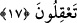

konuşmayın ki, kalpleriniz katılaşmasın. Katılaşmış kalb Allah’tan uzaktır.
Efendilermişsiniz gibi kulların günahlarına bakmak yerine kendinizi kul olarak görüp
kendi günahlarınıza bakın. İnsanlar belâya mâruz kalmış ve belâlardan âfiyet içinde
olmak üzere iki kısımdır. Belâya mâruz kalanlara acıyıp merhamet ediniz, âfiyette
olduğunuzdan dolayı da Allah’a hamd ediniz.
17. Bilin ki Allah, ölümünden sonra yeryüzünü canlandırıyor. Düşünesiniz diye
gerçekten, size âyetleri açıkladık.
“Biliniz ki Allah, ölümünden sonra yeryüzünü canlandırıyor.” Kalp katılığından
sakındırarak huşûa teşvik etmek için, Allah’ı zikir ve Kur’an tilâveti yoluyla kalplerin
diriltilmesi, ölmüş toprakların yağmurla yeniden canlandırılmasına benzetilmiştir.
Kâşifî şöyle demiştir: “Ey öldükten sonra dirilmeyi inkâr edenler biliniz…” “O ki,
yeryüzünü öldükten sonra diriltir...” işte O “ölüleri de bu şekilde diriltecektir.”
“Gerçekten size düşüneseniz diye âyetleri açıkladık.” Açıklamasını yaptığımız bu
âyetler de o âyetler cümlesindendir. İçindekileri düşünüp gereğince amel edesiniz ve bu
sayede iki cihan mutluluğuna eresiniz.
Derler ki Fudayl b. İyaz’ın tevbe etmesi bu âyeti işitmesi sebebiyle olmuştur.
Başlangıçta, yol kesme ve soygunculuk gibi doğru olmayan bir iş yapmaktaydı. Ne
zaman ki güzel yüzlü birinin sevdâsı gönlüne düştü, onunla gece yarısı buluşmak için
sözleşti, buluşma vakti geldiğinde mâşûkasını görmek için duvara tırmandığında şöyle
bir ses işitti: “Îmân edenlerin Allah’ı anma ve O’ndan inen Kur’an sebebiyle
kalplerinin ürpermesi zamanı daha gelmedi mi?...”
Bu âyet ok gibi Fudayl’ın kalbine saplandı. İçinden bir dert, bir ateş yükseldi.
Allah’ın inâyetini üzerine indirmesiyle tevfîk-i ilâhî’nin kemendine tutsak oldu. Şöyle
diyerek oradan geri döndü: “Evet, vallâhi o vakit geldi! Evet, vallâhî o vakit geldi!”
Fudayl buradan döndü ve bir harabede dinlenmek için oturdu. Yola çıkmak isteyen
kervancılardan bir grup da oradaydı ve birbirlerine: “Fudayl yoldadır, eğer gidersek
yolumuzu keser ve malımızı elimizden alır.” diyorlardı. Fudayl kendisini kınayarak: “En
kötü insan benim, bu ne eşkıyâlıktır ki gece yarısı günah işlemek maksadıyla evimden
çıkmışım ve benim korkumdan Müslümanlar gelip bu harâbeye sığınmışlar.” Yüzünü
semâya çevirdi ve temiz bir kalple tevbe-i nasûh ile tevbe etti, Allah’a şöyle yalvardı:
“Allah’ım bu kötü hâlimden dertliyim, bu eksikliğimden feryâd ediyorum. Ey
dertlilere dermân olan, derdime derman kıl! Ey ayıptan münezzeh olan, ey fitne ve
fesaddan yüce olan, ey benim hizmetime ihtiyacı olmayan, ey benim hıyânetimden
uzak olan! Rahmetine sığındım, bana merhamet eyle. Hevâmın bağıyla esir oldum,